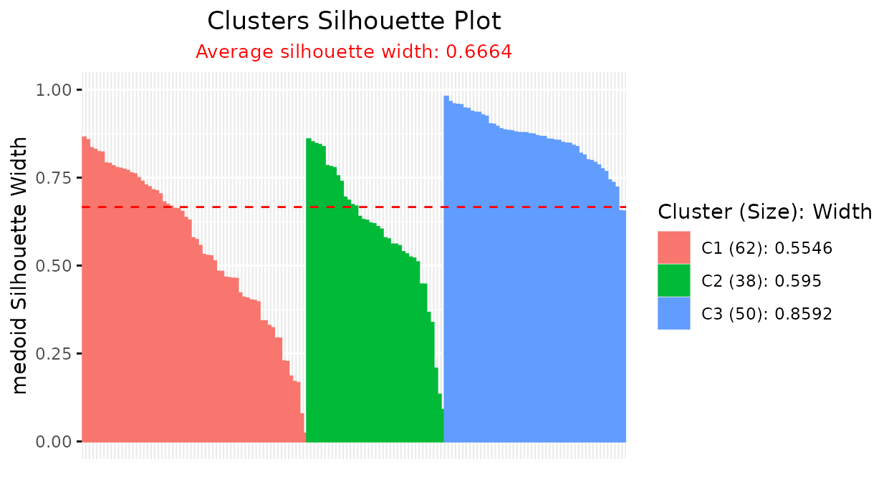

The silhouette width (Rousseeuw 1987) measures, for each observation, how much closer it is to its own cluster than to the nearest other cluster. Silhouette computes silhouette widths from an \(n \times K\) matrix: the distances (or similarities) from each observation to each of \(K\) clusters, or the membership probabilities that soft and model-based clustering methods return. It does not need the \(n \times n\) matrix of pairwise dissimilarities that the classical silhouette uses, so it works for large data sets and for fuzzy and probabilistic clusterings.
The widths computed here are therefore not the classical widths of
cluster::silhouette(). They follow the simplified
silhouette of Van der Laan et al. (2003)
and its extensions; the vignette
vignette("interpreting-widths", package = "Silhouette")
explains how they relate to the classical widths and how to read
them.
Which function do I need?
| What you have | Function |
|---|---|
| Distances or similarities from each observation to each cluster (for example, to k-means centroids or PAM medoids) | Silhouette() |
| Membership or posterior probabilities (fuzzy c-means, Gaussian mixtures, probabilistic distance clustering) |
softSilhouette(),
cerSilhouette(), dbSilhouette()
|
| Both, and you want every applicable width at once | calSilhouette() |
| Silhouette results for several modes of a block or multi-way clustering | extSilhouette() |
| Widths computed elsewhere that you want to summarize or plot | getSilhouette() |
| A silhouette object from cluster, factoextra or drclust | plotSilhouette() |
Every width function returns an object of class
"Silhouette": a data frame with one row per observation
(columns cluster, neighbor,
sil_width, and weight for fuzzy averaging)
that has summary() and plot() methods.
A first example: k-means
The k-means result contains the cluster centers but not the distances
to them, so we compute the \(n \times
K\) Euclidean distances with proxy::dist() and pass
them to Silhouette().
X <- as.matrix(iris[, 1:4])
set.seed(1)
km <- kmeans(X, centers = 3, nstart = 20)
P <- proxy::dist(X, km$centers) # 150 x 3 distances to the centers
sil <- Silhouette(P)
head(sil, 4)
#> cluster neighbor sil_width
#> 1 3 1 0.9586603
#> 2 3 1 0.8682865
#> 3 3 1 0.8831417
#> 4 3 1 0.8465006Each observation is assigned to its nearest cluster
(cluster) and compared with the next nearest
(neighbor). The width is \((b_i -
a_i)/\max(a_i, b_i)\), where \(a_i\) and \(b_i\) are the distances to those two
clusters, so it lies between 0 and 1: values near 1 mean the observation
is much closer to its own cluster, values near 0 mean it sits between
two clusters.
s <- summary(sil, print.summary = FALSE)
s$avg.width # average width over all observations
#> [1] 0.6663856
s$sil.sum # size and average width of each cluster
#> cluster size avg.sil.width
#> 1 1 62 0.5546
#> 2 2 38 0.5950
#> 3 3 50 0.8592
plot(sil)
The plot sorts the widths within each cluster and marks the overall average. The cluster of setosa flowers is compact and well separated; the other two clusters overlap, and a few of their observations have widths close to zero.
The argument method = "pac" uses the normalization of
Raymaekers and Rousseeuw (2022), \((b_i - a_i)/(a_i + b_i)\). It ranks the
observations in the same order as the default and gives smaller values:
each PAC width equals \(s_i/(2 -
s_i)\), where \(s_i\) is the
default width.
sil_pac <- Silhouette(P, method = "pac")
all.equal(sil_pac$sil_width, sil$sil_width / (2 - sil$sil_width))
#> [1] TRUEScoring a partition from elsewhere
A silhouette scores a partition. By default Silhouette()
takes it from the matrix, assigning each observation to its nearest
cluster, which for k-means is the partition the algorithm produced. For
other methods, pass the partition as cluster (column
numbers of the matrix). Here an average-linkage partition is scored
against the centroids of its own groups:
hc <- cutree(hclust(dist(X), method = "average"), k = 3)
centers <- apply(X, 2, function(v) tapply(v, hc, mean))
sil_hc <- Silhouette(proxy::dist(X, centers), cluster = hc)
summary(sil_hc, print.summary = FALSE)$avg.width
#> [1] 0.6662315
sum(sil_hc$sil_width < 0) # flowers closer to another group's centroid
#> [1] 2Observations that are closer to another cluster’s centroid than to
their own receive negative widths. Without cluster, they
would silently be moved to the nearest centroid and a different
partition would be scored. Memberships passed as
prob_matrix play the same role: each observation keeps the
cluster with its largest membership.
Letting a clustering function do the work
Many clustering functions return the proximity matrix themselves.
Instead of extracting it, you can pass the function as
clust_fun, its arguments through ..., and the
name of the component to use. Here fuzzy c-means from
ppclust returns the distances in component
d and the memberships in component u:
set.seed(1)
sil_fcm <- Silhouette(prox_matrix = "d", prob_matrix = "u", average = "fuzzy",
clust_fun = ppclust::fcm, x = X, centers = 3)
summary(sil_fcm, print.summary = FALSE)$avg.width
#> [1] 0.9297577With average = "fuzzy", the average weights each
observation by how decisively it is assigned, following Campello and Hruschka (2006).
One caution: ppclust::fcm() stores
squared Euclidean distances in d. Squaring
every distance changes each width from \(s_i\) to \(s_i(2
- s_i)\), which is larger. To work on the Euclidean scale, fit
the model first and take square roots:
set.seed(1)
fm <- ppclust::fcm(X, centers = 3)
summary(Silhouette(sqrt(fm$d), prob_matrix = fm$u, average = "fuzzy"),
print.summary = FALSE)$avg.width
#> [1] 0.7751698Soft and model-based clustering
When all you have is a matrix of membership or posterior
probabilities, use softSilhouette(). For a Gaussian mixture
fitted with mclust, the posterior probabilities are in
component z:
suppressPackageStartupMessages(library(mclust)) # Mclust() needs mclust attached
gm <- Mclust(X, G = 3, verbose = FALSE)
sil_gm <- softSilhouette(gm$z)
summary(sil_gm, print.summary = FALSE)$avg.width
#> [1] 0.9761876calSilhouette() computes every width that its inputs
allow and returns one table, with crisp, membership-weighted (fuzzy) and
median averages:
calSilhouette(prob_matrix = gm$z)
#> Method Crisp Fuzzy Median
#> 1 pp_pac 0.9761876 0.9857918 0.9999979
#> 2 pp_medoid 0.9854540 0.9923297 0.9999989
#> 3 nlpp_pac 0.9881504 0.9948591 0.9999998
#> 4 nlpp_medoid 0.9924982 0.9972875 0.9999999
#> 5 pd_pac 0.9762026 0.9864840 0.9999974
#> 6 pd_medoid 0.9847254 0.9926351 0.9999987
#> 7 cer 0.9880938 0.9928959 0.9999989
#> 8 db 0.3028210 0.3143946 0.1575264The rows are different indices on different scales, so compare each
row across fits, never the rows with each other. They are also not
independent evidence: several rows are monotone transformations of one
another (see ?calSilhouette). The rows computed from
memberships are the silhouettes of Bhat Kapu and
Kiruthika (2024) (PACS, PPS, NLPPS, PDS and the certainty
silhouette CeS) and the density-based silhouette of Menardi (2011); to choose the number of clusters
they are read differently from the distance-based widths. The vignette
vignette("soft-clustering", package = "Silhouette")
explains each index and when to use it.
Choosing the number of clusters
A common use of the average width is to compare partitions with different numbers of clusters and pick the one with the largest average.
avg_width <- sapply(2:6, function(k) {
set.seed(k)
km <- kmeans(X, centers = k, nstart = 20)
s <- Silhouette(proxy::dist(X, km$centers))
summary(s, print.summary = FALSE)$avg.width
})
plot(2:6, avg_width, type = "b", pch = 19,
xlab = "Number of clusters", ylab = "Average silhouette width")For the iris measurements the average is highest at two clusters,
because versicolor and virginica overlap; the
silhouette favors compact, well-separated groups rather than the three
species. Choosing the number of clusters needs more than one index, and
the widths computed from posterior probabilities behave differently
again (see
vignette("soft-clustering", package = "Silhouette")).
Where next
-
vignette("interpreting-widths", package = "Silhouette"): how the widths relate to the classical silhouette, their ranges, and which comparisons are valid. -
vignette("soft-clustering", package = "Silhouette"): widths from membership and posterior probabilities, fuzzy averaging, and comparing soft clustering algorithms. -
vignette("multiway", package = "Silhouette"): the extended silhouette for block and multi-way clustering. - The package website has further articles: silhouette plots for results from this and other packages, a case study with clinical data, and a comparison with other packages including timings.
Session information
sessionInfo()
#> R version 4.6.2 (2026-10-29)
#> Platform: x86_64-pc-linux-gnu
#> Running under: Ubuntu 26.04.1 LTS
#>
#> Matrix products: default
#> BLAS: /usr/lib/x86_64-linux-gnu/openblas-pthread/libblas.so.3
#> LAPACK: /usr/lib/x86_64-linux-gnu/openblas-pthread/libopenblasp-r0.3.32.so; LAPACK version 3.12.0
#>
#> locale:
#> [1] LC_CTYPE=C.UTF-8 LC_NUMERIC=C LC_TIME=C.UTF-8
#> [4] LC_COLLATE=C.UTF-8 LC_MONETARY=C.UTF-8 LC_MESSAGES=C.UTF-8
#> [7] LC_PAPER=C.UTF-8 LC_NAME=C LC_ADDRESS=C
#> [10] LC_TELEPHONE=C LC_MEASUREMENT=C.UTF-8 LC_IDENTIFICATION=C
#>
#> time zone: UTC
#> tzcode source: system (glibc)
#>
#> attached base packages:
#> [1] stats graphics grDevices utils datasets methods base
#>
#> other attached packages:
#> [1] mclust_6.1.3 Silhouette_0.9.7
#>
#> loaded via a namespace (and not attached):
#> [1] kpeaks_1.1.0 sass_0.4.10 generics_0.1.4 tidyr_1.3.2
#> [5] rstatix_1.1.0 lhs_1.3.0 digest_0.6.39 magrittr_2.0.5
#> [9] evaluate_1.0.5 grid_4.6.2 RColorBrewer_1.1-3 fastmap_1.2.0
#> [13] jsonlite_2.0.0 ppclust_1.1.0.1 backports_1.5.1 Formula_1.2-6
#> [17] purrr_1.2.2 scales_1.4.0 textshaping_1.0.5 jquerylib_0.1.4
#> [21] abind_1.4-8 cli_3.6.6 rlang_1.3.0 withr_3.0.3
#> [25] cachem_1.1.0 yaml_2.3.12 otel_0.3.0 tools_4.6.2
#> [29] ggsignif_0.6.4 dplyr_1.2.1 ggplot2_4.0.4 ggpubr_1.0.0
#> [33] broom_1.0.13 vctrs_0.7.3 R6_2.6.1 proxy_0.4-29
#> [37] lifecycle_1.0.5 car_3.1-5 fs_2.1.0 htmlwidgets_1.6.4
#> [41] inaparc_1.2.1 MASS_7.3-66 ragg_1.5.2 pkgconfig_2.0.3
#> [45] desc_1.4.3 pkgdown_2.2.1 bslib_0.12.0 pillar_1.11.1
#> [49] gtable_0.3.6 glue_1.8.1 Rcpp_1.1.2 systemfonts_1.3.2
#> [53] xfun_0.62 tibble_3.3.1 tidyselect_1.2.1 knitr_1.52
#> [57] farver_2.1.2 htmltools_0.5.9 labeling_0.4.3 carData_3.0-6
#> [61] rmarkdown_2.32 compiler_4.6.2 S7_0.2.2